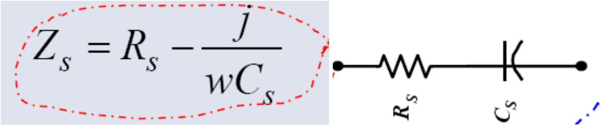
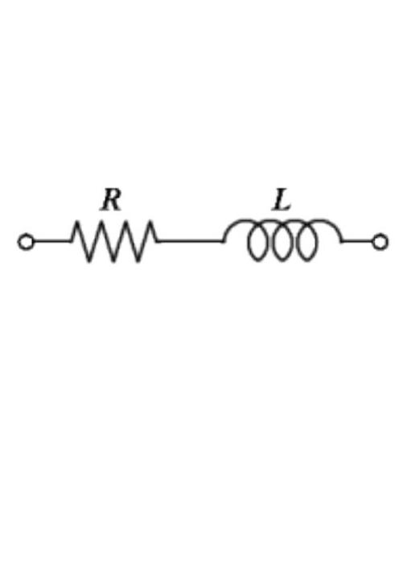

Impedance Concepts and Circuits
Capacitor Equivalent Circuits:
The equivalent circuit of a capacitor consists of a pure capacitance $C$ and a resistance $R$. Where, $C p$ represents the actual capacitance value, and $R p$ represents the resistance of the dielectric or leakage resistance.
The series impedance is

$$X_{C}=\frac{1}{2 \pi f C}$$
in parallel $\mathrm{Xc}=2 \pi \mathrm{fC}, \quad \mathrm{w}=2 \pi \mathrm{f}$
Impedance of R and C in series
$$\begin{aligned}
Z&=R+\frac{1}{j \omega C}, \quad \omega=2 \pi f\\
|Z|&=\sqrt{R^{2}+\frac{1}{(\omega C)^{2}}}
\end{aligned}$$
Phase difference
$$\phi=\tan ^{-1}\left(-\frac{1}{\omega C R}\right)$$
Impedance of R and L in parallel
$$\begin{aligned}
\frac{1}{Z}&=\frac{1}{R}+\frac{1}{j \omega L}, \quad \omega=2 \pi f\\
|Z|&=\frac{1}{\sqrt{\left(\frac{1}{R}\right)^{2}+\left(\frac{1}{\omega L}\right)^{2}}}
\end{aligned}$$
Phase difference
$$\phi=\tan ^{-1}(-\omega C R)$$

Impedance of R and L in series
$$\begin{aligned}
Z&=R+j \omega L, \quad \omega=2 \pi f\\
|Z|&=\sqrt{R^{2}+(\omega L)^{2}}
\end{aligned}$$
Phase difference
$$\phi=\tan ^{-1}\left(\frac{\omega L}{R}\right)$$